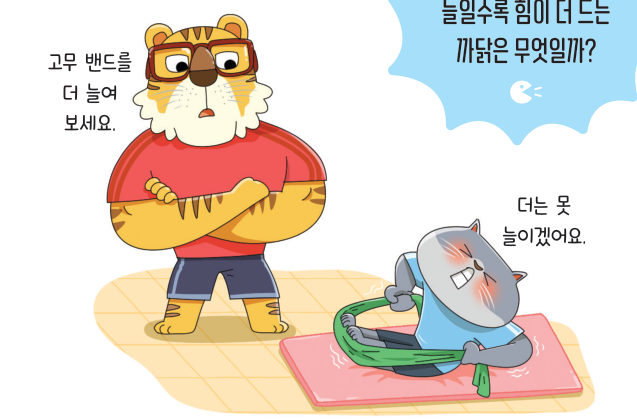
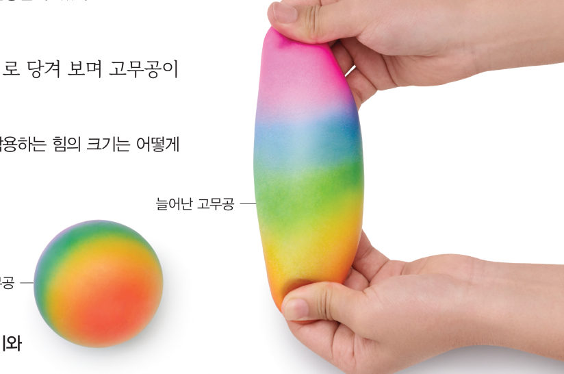
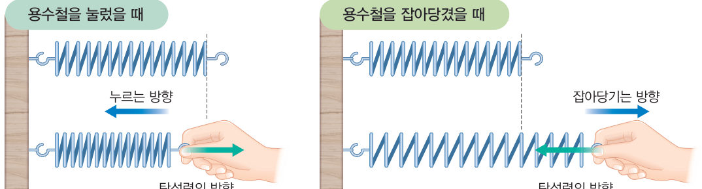
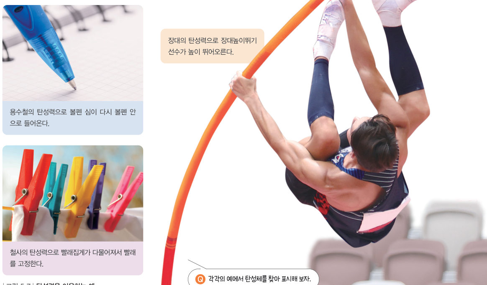
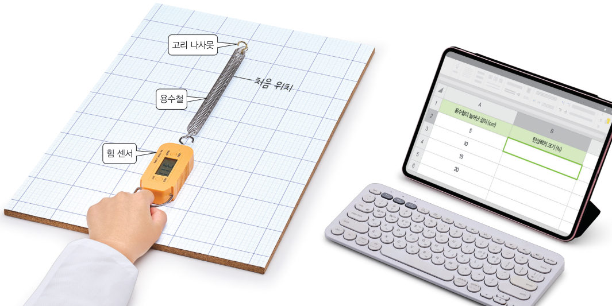
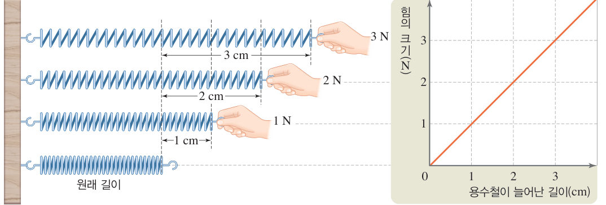
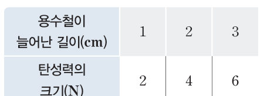

원래대로
돌아가려는 힘
“고무 밴드를 더 늘여 보세요.” “더는 못 늘이겠어요.” 고무 밴드를 늘일수록 힘이 더 드는 까닭은 무엇일까? 가상 힘 센서로 용수철을 잡아당겨 늘어난 길이와 탄성력의 관계를 찾아보자.
탄성력은 무엇일까?
고무 밴드를 잡아당겼다 놓으면 늘어났던 고무 밴드의 모양이 원래 모양으로 돌아간다. 물체가 ●변형되었을 때 원래 모양으로 돌아가려는 성질을 탄성이라고 하고, 변형된 물체가 원래 모양으로 돌아가려는 힘을 탄성력이라고 한다.
●변형: 물체가 힘을 받아 모양이 변하는 것

용수철을 그림 5-6과 같이 손으로 누르면 용수철이 손을 밀어내고, 용수철을 잡아당기면 용수철도 손을 당기는 것을 느낄 수 있다. 이것은 변형된 용수철이 원래 모양으로 돌아가려고 하기 때문이다. 고무공이나 용수철 등과 같이 탄성이 있는 물체를 탄성체라고 하며, 탄성력은 변형된 탄성체가 원래 모양으로 돌아가려는 방향으로 작용한다.

용수철을 손으로 잡아당겨 늘어나게 할 때 용수철이 많이 늘어날수록 용수철이 손을 당기는 탄성력이 커진다. 이와 같이 탄성력의 크기는 탄성체가 많이 변형될수록 크다. 우리는 탄성력을 그림 5-7과 같이 생활에서 다양하게 이용하고 있다.

• 볼펜 → • 빨래집게 → • 장대높이뛰기 →
용수철이 늘어난 길이는 용수철의 탄성력과 어떤 관계가 있을까?

- 나무판 위에 모눈종이를 붙이고, 한쪽에 고리 나사못을 꽂아 고정한다.
- 디지털 탐구 도구 활용 용수철의 한쪽 끝을 고리 나사못에 걸고, 다른 쪽 끝에는 힘 센서를 연결한다. (실험 전 영점 조절 단추를 눌러 영점을 맞춘다.)
- 모눈종이에 용수철의 처음 위치를 표시한다.
- 자료 수집 힘 센서로 용수철을 잡아당겨 늘어난 길이가 5 cm, 10 cm, 15 cm, 20 cm가 되었을 때 힘 센서에 표시된 탄성력의 크기를 스프레드시트에 기록한다.
- 자료 변환 가로축은 늘어난 길이, 세로축은 탄성력의 크기로 하여 그래프로 나타낸다.
정리해 볼까
다르게 해 보기 · 용수철 실험 장치로 용수철의 탄성력 측정하기

용수철을 잡아당겨 용수철이 늘어난 길이가 2배, 3배로 늘어나면 그림 5-8과 같이 탄성력의 크기도 2배, 3배로 커진다. 이와 같이 용수철이 늘어났을 때 용수철의 탄성력 크기는 용수철이 늘어난 길이에 비례한다.


⑦ 36 N짜리 물체를 매달면 cm 늘어난다. ⑧ 처음 길이가 5 cm일 때 18 N으로 당기면 전체 길이는 cm이다. ⑨ 달에서 추 6개를 매달면 cm 늘어난다.
2탄성력
(2) 탄성력의 방향: 변형된 탄성체가 원래 모양으로 돌아가려는 방향
(3) 탄성력의 크기: 탄성체가 많이 변형될수록 크다.
(4) 늘어난 용수철의 탄성력 크기: 용수철이 늘어난 길이에 .